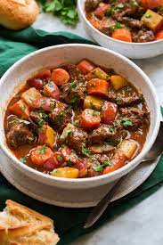

Beef Stew Recipe

Beef stew is a hearty dish that I find easy to make for meal prepping.
Its full of heart pieces of beef and veggies that make it the perfect
one bowl meal needed to fuel my day.
I prefer using cuts of steak(leaner) as my choice of meat, but feel
free to use chuck or any other cut of beef. Also prefer using small
golden potatoes as they have a much creamier texture than russets.
I make my beef stew in the instant pot as it is a set it and forget it
process. You throw all your ingredients in the pot and you are all set!
Ingredients
- 2 pounds of beef steak or chuck, cut into 1/2 inch cubes or strips
- Half a bag of small golden potatoes, cut in half
- Bag of baby carrots
- 8 oz of white mushrooms
- 8 oz of red wine
- 8 oz can of tomato sauce
- 1 tbsp garlic powder
- 1 tbsp onion powder
- 1 tbsp oregano
- 1 tbsp kosher salt
Directions
- Place meet in instant pot.
- Add in garlic powder, onion powder, oregano and kosher salt.
- Add in potatoes, carrots and mushrooms.
- Pour in the red wine and tomato sauce.
- Set lid on instant pot and use stew/meat preset.
- Once done, let it naturally release and enjoy.